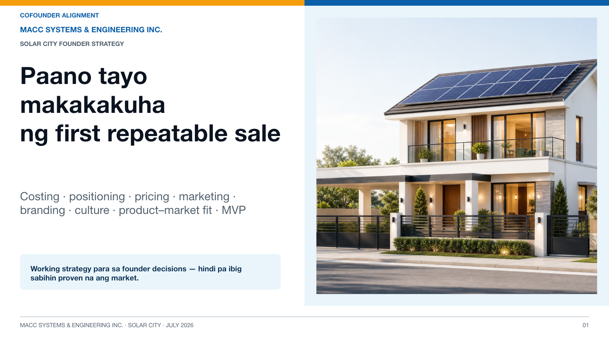
Slide 1: Paano tayo makakakuha ng first repeatable sale
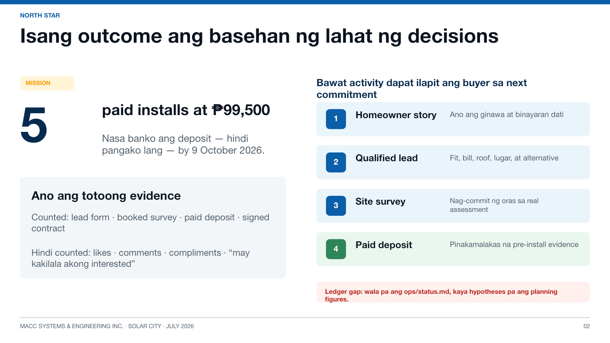
Slide 2: Isang outcome ang basehan ng lahat ng decisions
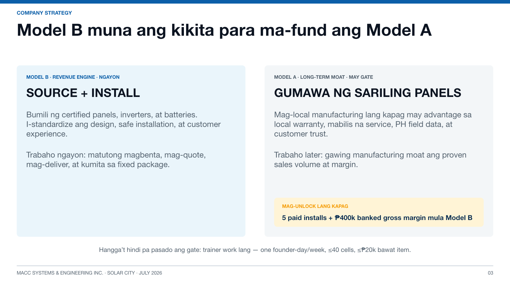
Slide 3: Model B muna ang kikita para ma-fund ang Model A
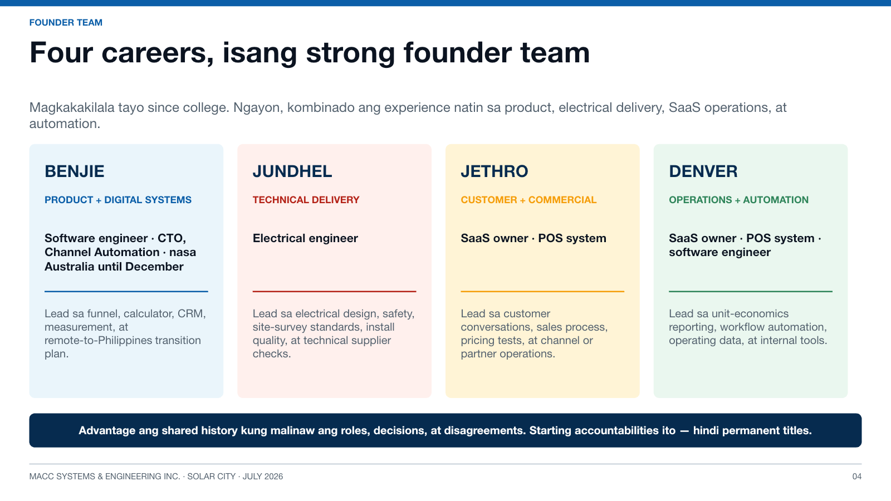
Slide 4: Four-founder team at starting accountabilities
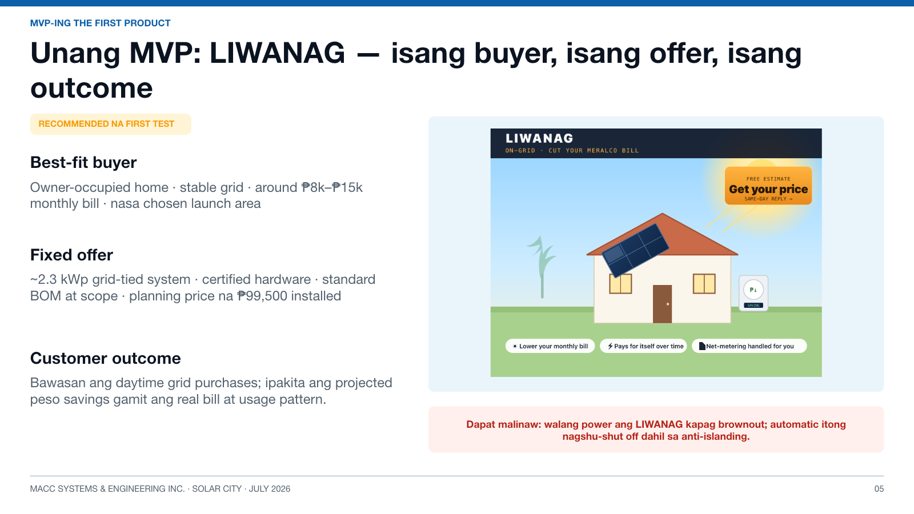
Slide 5: Unang MVP: LIWANAG
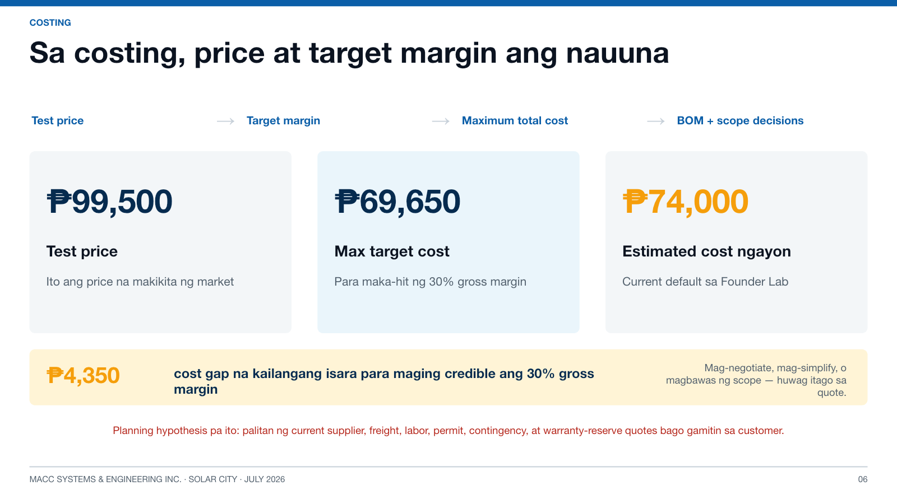
Slide 6: Costing strategy
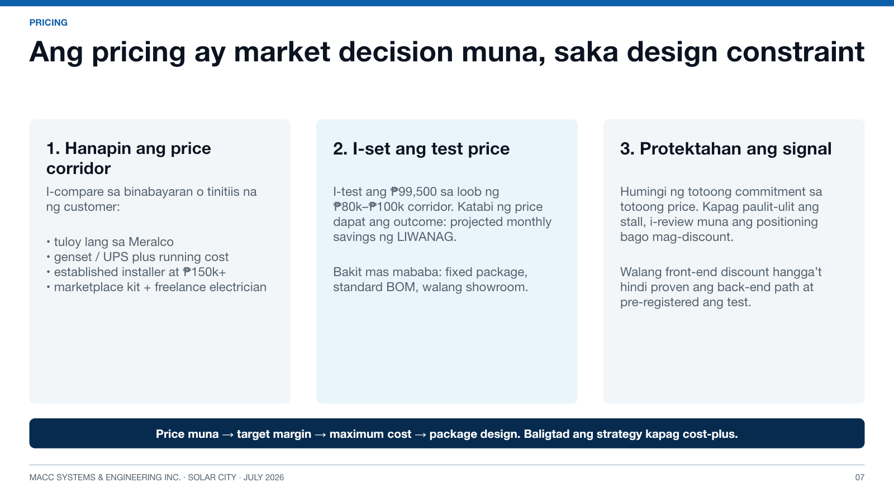
Slide 7: Pricing strategy
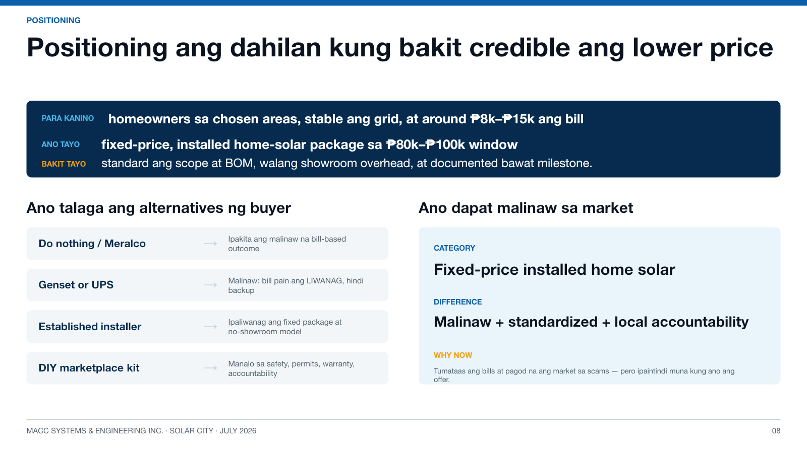
Slide 8: Positioning strategy
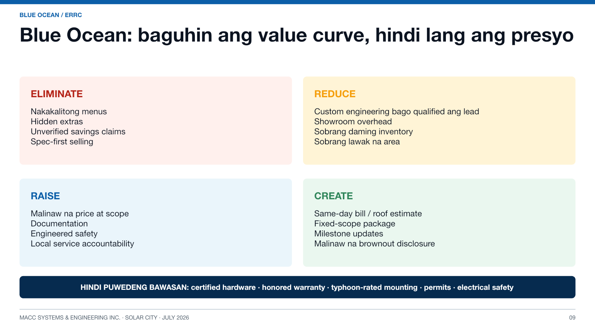
Slide 9: Blue Ocean ERRC grid
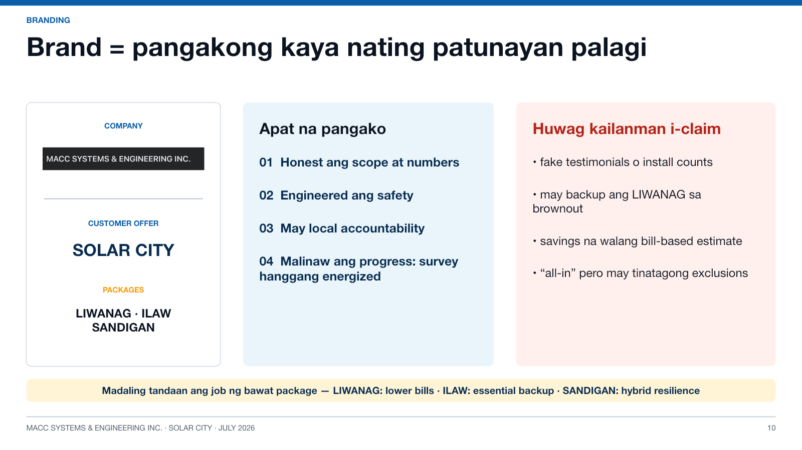
Slide 10: Brand hierarchy at promises
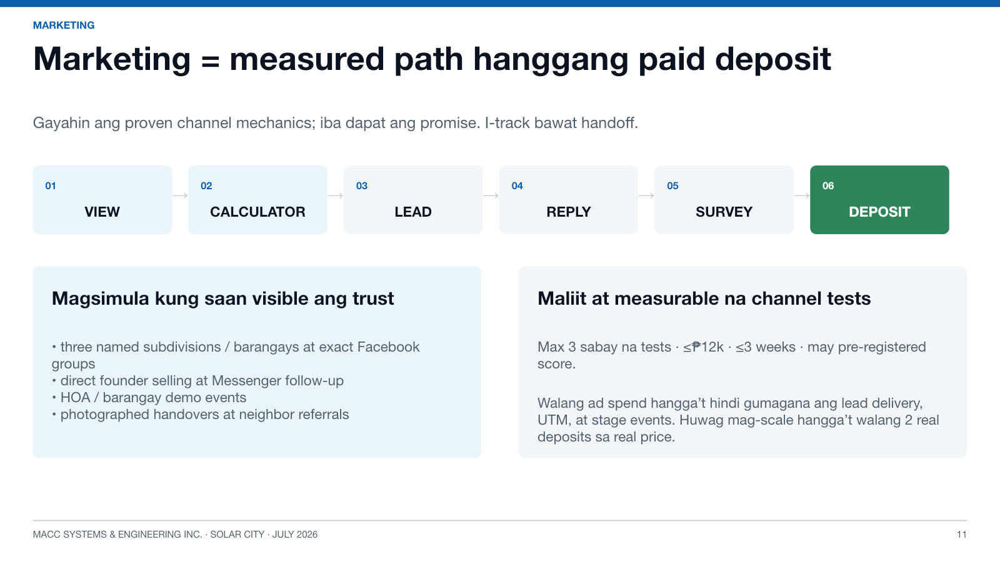
Slide 11: Marketing path hanggang deposit
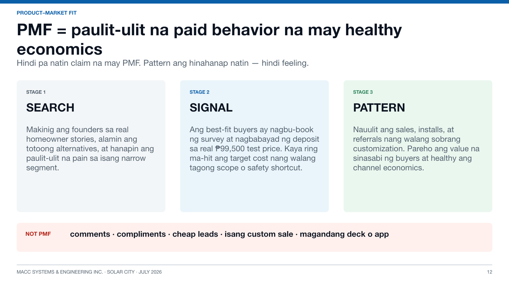
Slide 12: Product-market fit
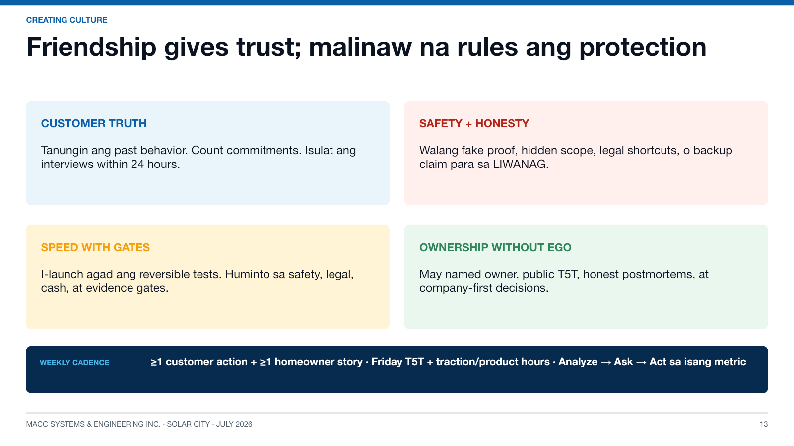
Slide 13: Founder culture
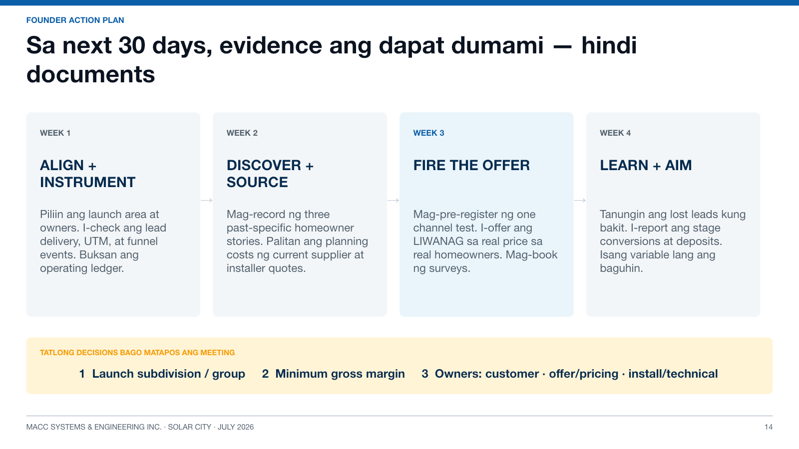
Slide 14: Thirty-day action plan
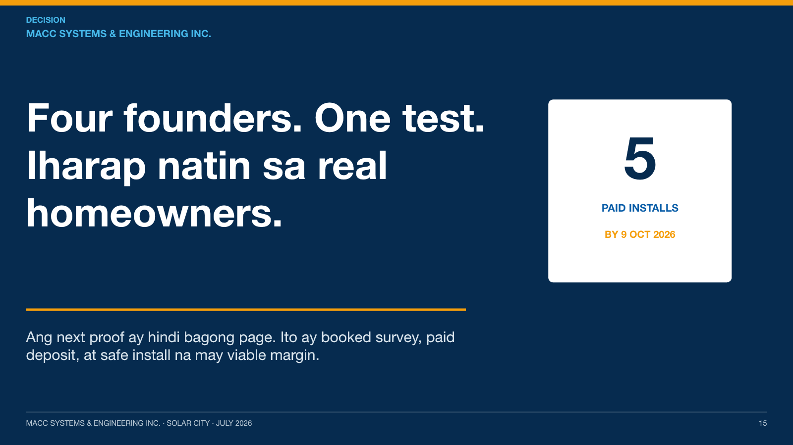
Slide 15: Four founders, one test
01 / 15